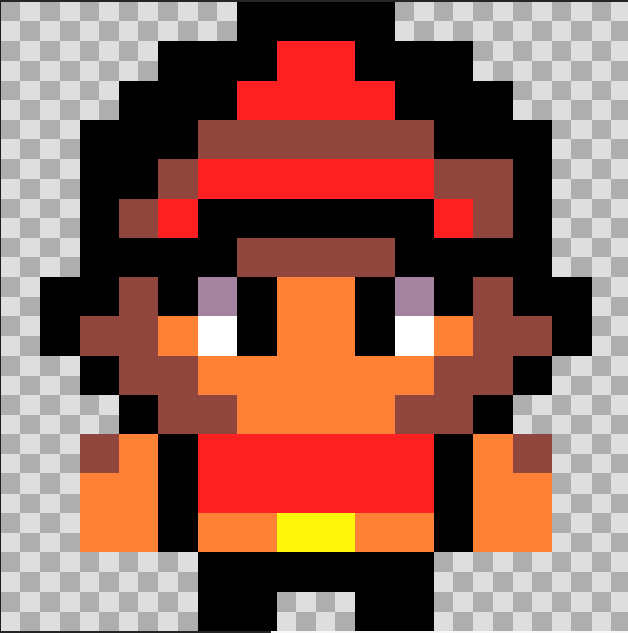
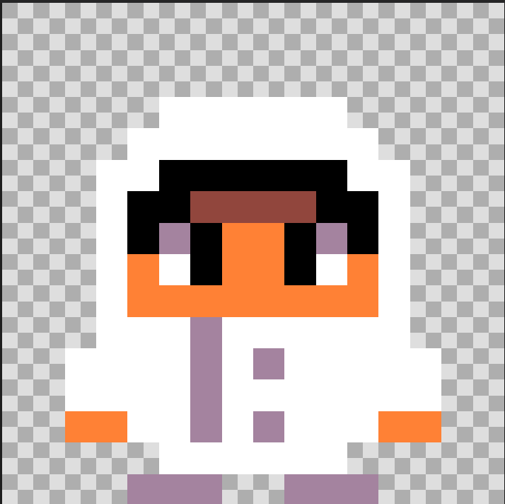
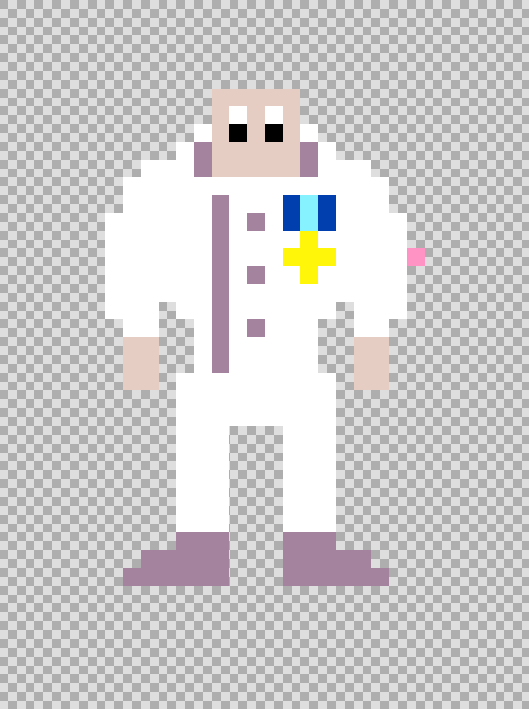
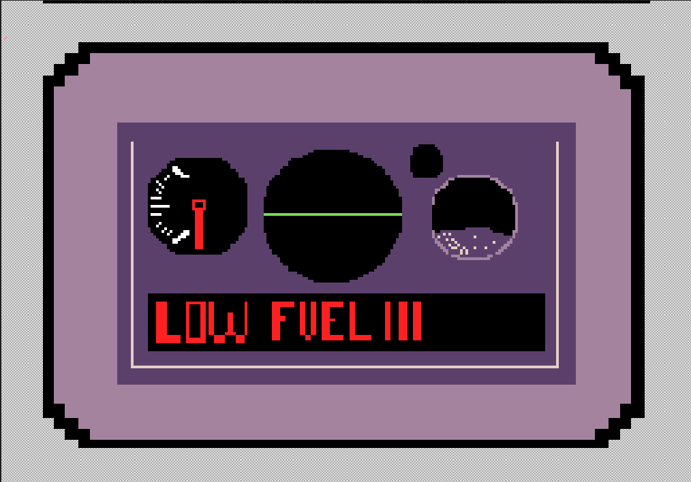
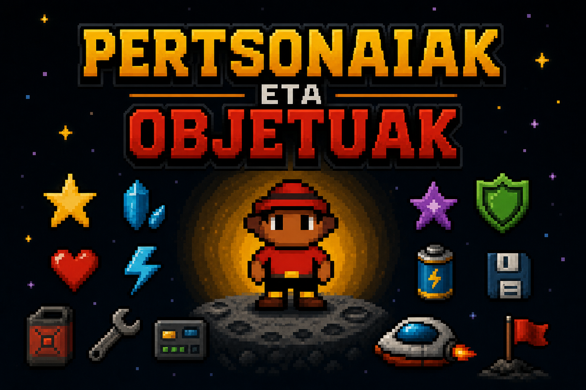

| PERTSONAIA NAGUSIA (HASIERAN) |
 |
Player motako sprite-a da.Hau jokoa hasten denean gure pertsonaiak duen itxura da. |
|---|---|---|
| PERTSONAIA NAGUSIA (JOKO OSOAN ZEHAR) |
 |
Player motako sprite-a da.Hau hasierako misioa egin hostean eta kutxa ikutzean jartzen den itxura da, eta itxura hau joko osoan zehar mantentzen du. |
| KAPITAINA |
 |
Kapitain motako sprite-a da.Hau hasieratik gurekin dagoen bigarren mailako pertsonaia da, honek aginduak ematen dizkigu jokoa hastetik amaitzerarte. |
| MOTORRA |
 |
Motor motako spritea da, kapitainak ematen duen betebeharretako bat da, hau erreparatu beharra dago eta honengatik espaziontzia apurtu eta espazioan zehar geratzen dira. |
| IZARRA |
|
Jaso beharreko food motako objetua da, honelak 10 jaso behar ditugu botereak lortzeko. |
| PROIEKTILAK |
|
Proyectile motako spritea da, hau 10 izar jaso hostean lortze da eta honekin amaierako dragoia hil behar da. |
| DRAGOIA |
|
Etsai motako spritea da.Hau amaieran hil beharreko etsaia da, honek bizitza barra du. |